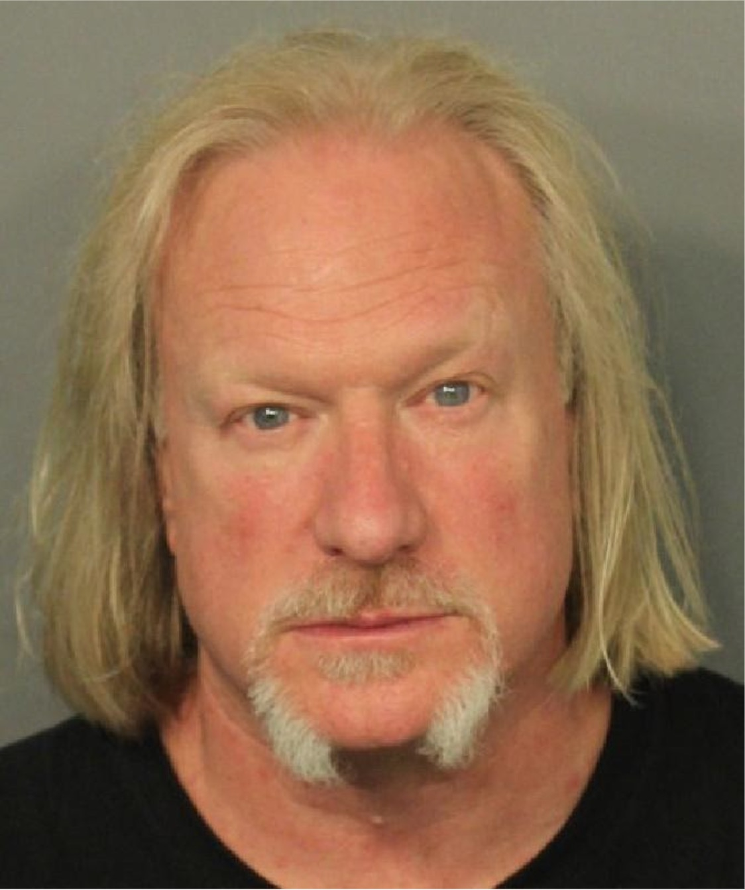

+++
Keith Gillette, 43, didn’t say much to detectives at first. He and Paiva had hung out at the shelter all day before taking the RIPTA 60 bus to grab a slice at North End Pizza in Portsmouth, Gillette told them. At one point, Paiva had wandered the shelter trying to break a $100 bill that his mother had given him for groceries, but otherwise the two were together the whole evening. Neither had purchased any drugs, and they had parted ways when they returned to the McKinney Shelter that night.
About a month later, Gillette encountered the dealer who’d sold him the deadly fentanyl at a Stop & Shop in Fall River, Massachusetts. Gillette warned him that someone had died from the drugs he had sold.
“People die off my shit all the time. I don’t give a fuck,” the dealer replied, or “something along the lines” of that, according to court records.
This angered Gillette, who had been haunted by his friend’s death.
A few days later, he called the Newport Police Department despite knowing that he might be criminally charged himself. He told them that he’d lied when they’d first questioned him. Now he wanted to come in and tell the truth.
+++
What Keith Gillette told the police on October 15, 2018 would lead to a precedent-setting indictment that could land a drug dealer in prison for the rest of his life:
Paiva had appeared “dope sick” when Gillette first encountered him that day in September at the McKinney homeless shelter. Feeling badly for him, Gillette called a contact whom he’d bought heroin from before. They arranged a meet-up.
He and Paiva took the bus to Portsmouth, where they stopped for a slice of pizza before crossing the street to buy syringes at a CVS. Paiva was nervous about purchasing the syringes, so he handed money to Gillette, who bought them for him. They then crossed East Main Road to Clements Market, where Gillette purchased the drugs.
He identified the dealer as Cary Pacheco, 56, of 251 Briggs Road, Westport, Massachusetts. Pacheco, Gillette said, was the man who had sold him the fentanyl-laced heroin that resulted in Paiva’s death.
Police were able to determine through the Massachusetts Probation Service that Pacheco was wearing an electronic monitoring bracelet at the time of the drug deal. The bracelet placed Pacheco in the parking lot of Clements Marketplace at 7:30 p.m. on September 10, 2018, according to court records.
On November 29, 2018, Gillette, along with an undercover Newport police detective, arranged to buy 20 bags of fentanyl from Pacheco. Another man, Michael Vandenburgh, now 51, of Fall River, Massachusetts carried out the transaction on behalf of Pacheco, according to police. When the deal was complete, Pacheco and Vandenburgh were both arrested. At the time of the arrest, the police found 61 additional bags of fentanyl in Pacheco’s possession.
Vandenburgh has since pleaded no-contest to two of the four offenses he was charged with in connection with that transaction and has completed serving a one-year prison term. The state dismissed the other two counts.
Pacheco is being held without bail awaiting trial at the Adult Correctional Institutions.
He is the first person in Rhode Island to be charged under the controversial Kristen’s Law for drug delivery resulting in death (DDRD), a felony that carries a penalty of up to life in prison.
+++
Kristen’s Law took effect in 2018, creating a clearer pathway than had previously existed for prosecutors to charge drug dealers for selling drugs that lead to a fatal overdose. It was named after Kristen Coutu, a woman from Cranston who died of an overdose at age 29 in 2014. Coutu thought she was using heroin, but her dealer had sold her fentanyl, a far cheaper and more potent drug. She died alone in her mother’s car.
“There should be consequences for the people who are career criminals, career drug dealers, who are playing Russian roulette with people’s lives,” said Sue Coutu, Kristen’s mother, who lobbied at great lengths to pass the bill.
Aaron Andrade, the Providence man who sold Kristen the fentanyl that killed her, was charged in 2015 with second-degree murder. Andrade pleaded no-contest and in April 2017, at age 25, received a 40-year sentence, with 20 years to serve in prison and 20 years suspended.
“A lot of people said: Well, if you could prosecute Andrade, why did we need [Kristen’s] law?” said Joee Lindbeck, a former Drug Court prosecutor who was involved in writing Kristen’s Law. “We wanted to make it its own crime for a deterrent effect. A separate crime on the books had to exist for specificity.”
Legislators first introduced Kristen’s Law as a way to reduce the supply of cheap, lethal drugs and hold “career criminals” accountable.
In 2018, the year Kristen’s Law took effect, overdose deaths were the leading cause of injury deaths across the state, killing more Rhode Islanders than suicide, homicide, violence-related deaths, and car crashes combined, according to the Office of the Attorney General. There were 314 people who died of overdose in Rhode Island that year, according to the Rhode Island Department of Health.
Andrew Paiva was one of them.
“If you are doing this with malice, selling toxic substances to someone who is vulnerable and they die, [you] should be held accountable,” said Lindbeck.
But harm reduction advocates are not convinced Kristen’s Law will achieve what it is intended to. Such laws have had no effect in decreasing the sale of illegal drugs by street dealers, according to studies they cite. They also worry that Kristen’s Law will be used unfairly to charge vulnerable users with homicide if they share drugs with a friend who then dies of overdose.
Several advocacy groups spoke out against the law when it was being debated in the General Assembly. In a letter to Governor Gina Raimondo signed by dozens of medical organizations and professionals across the state, the Rhode Island Medical Society wrote: “The bill’s language does not prevent the prosecution of ‘small time’ dealers who trade or sell drugs, and who may themselves struggle with substance use disorder, or those who provide drugs to a friend for a few dollars or in exchange for a bed for the night. It is these individuals, not drug kingpins, who are most likely to get charged under this law....”
“Working towards public health solutions, not retribution, is what we need,” said Haley McKee, co-chair of the Substance Use Policy, Education, and Recovery (SUPER) PAC, who recovered from substance abuse herself and lobbied against Kristen’s Law.
The bill eventually passed, but with some amendments. The original bill had called for a mandatory life sentence. The amended version allows for life sentences to be imposed but does not make them mandatory. It also carves out a Good Samaritan exception, which grants immunity to people who call 911 if they believe that a user is overdosing.
Members of the Paiva family are optimistic that in Andrew’s case, Kristen’s Law is being used the way it was intended: to hold only higher-level drug dealers accountable.
+++
Pacheco has a lengthy criminal record, going back to at least 1999 when he was charged in Massachusetts with four drug-related charges. He has been charged since then for drug offenses, including heroin distribution, as well as home invasion and assault and battery on a household/family member in Massachusetts, and a misdemeanor charge for driving with a suspended license in Rhode Island.
In March 2019, a Newport County Grand Jury indicted Pacheco on five charges relating to the undercover drug deal that led to his arrest and the drug transaction that led to Paiva’s death: one count of delivering fentanyl; one count of delivering heroin; one count of delivering tramadol; one count of controlled-substance conspiracy and one count of delivering fentanyl, resulting in death. Each delivery charge carries a maximum of 30 years in prison, while the charge for delivering fentanyl, resulting in death—or DDRD—could result in Pacheco serving life in prison. He has pleaded not guilty to all charges.
Pacheco’s lawyers are attempting to get the DDRD charge dismissed before the case goes to trial. At a November 18 hearing on their motion, the defense argued that the wording of Kristen’s Law is “unconstitutionally vague,” and that prosecutors should not be allowed to try him on the charge of delivering fentanyl, resulting in death.
“The vagueness problem lies in the phrase ‘an unlawful delivery of a controlled substance’,” wrote public defenders Amanda Valentino and Sarah Potter in a memo filed with Superior Court Judge William E. Carnes. In particular, the law “fails to provide notice as to exactly what would be considered ‘unlawful delivery’ under this statute.”
The defense also argued that Kristen’s Law “allows for the imposition of an unconstitutionally excessive punishment” in violation of both the United States and Rhode Island Constitutions. “Criminalizing low-level drug users comes with serious constitutional implications,” wrote Valentino and Potter.
The defense also emphasized the statute’s lack of a mens rea requirement, which means a person can be sentenced under Kristen’s Law without proof of intentional wrongdoing or recklessness. Other states in the U.S. also have DDRD statutes but choose to incorporate a mens rea component, and others still instead rely on an involuntary manslaughter theory, wrote Valentino and Potter.
“Mr. Pacheco’s own case presents an example of the disproportionate reach of this draconian law,” added the defense, noting that there was no evidence that Pacheco knew of Paiva’s existence, nor that the drugs would be used by anyone other than Gillette.
In papers filed opposing the motion to dismiss, prosecutors point out that according to doctrines adopted by the Rhode Island Supreme Court, “a criminal statute will be declared void only ‘when it is so vague that men of common intelligence must necessarily guess at its meaning’.” In the case of Kristen’s Law, the state argues, the prohibition on the delivery of controlled substances is “simple, clear and unambiguous.”
Prosecutors also argued that because he has yet to be convicted or sentenced, Pacheco “lacks standing to raise a constitutional challenge to the penalty provided in the statute.” Whether another state chooses to prosecute cases like Pacheco’s under a manslaughter theory with a mens rea requirement, instead of relying on DDRD laws, has nothing to do with the constitutionality of Kristen’s Law, prosecutor Roger R. Demers told the court at the November hearing.
The statute specifies that a person is guilty of DDRD if he or she unlawfully delivers drugs to a person who subsequently delivers the substance to another adult, death resulting. What took place between Pacheco and Paiva “is exactly what is prohibited” by Kristen’s Law, said Demers.
Judge Carnes has yet to issue a decision on the defense motion. No trial date has been set for Pacheco.
+++
While Pacheco is the first person in Rhode Island to face a DDRD charge, thousands have been prosecuted under similar laws across the country. Between 2012 and 2017, the number of DDRD charges brought by prosecutors in a year jumped from 25 to 753, according to the Health in Justice Action Lab at Northeastern University.
More than two dozen states now have DDRD laws on the books, though they vary greatly in language and enforcement across states.
Rhode Island is one of eight states that allows for a sentence of up to life in prison for DDRD. Four states allow for the death penalty and the remaining 13 with DDRD laws enforce maximum incarceration periods of between 10 and 60 years. Under federal law, a person found guilty of DDRD now faces a minimum of 20 years in prison.
The Health in Justice Action Lab reports that the state most active in pursuing drug-induced homicide charges is Pennsylvania, at 644 cases, followed by Ohio at 385 cases and Wisconsin at 351.
Oftentimes, defendants in DDRD cases are people struggling with substance use disorder themselves.
“Out of the half dozen drug delivery resulting in death cases that I’ve been assigned to as a public defender, all of the defendants were drug users,” said Joshua Neiderhiser, an attorney in the Office of Conflict Counsel in York County, Pennsylvania, which holds the second-highest record for DDRD cases nationwide.
According to the Health In Justice Lab, a majority of DDRD prosecutions are being brought against people who are not drug dealers at all. In a sample of 213 cases brought against individuals accused of drug-induced homicide between 2000 and 2017, 50% of those accused were a caretaker, family member, friend, or partner; 47% of those accused were dealers and 3% were doctors.
And most of those who fall into the category of drug dealer tend to be at the lower level. “It’s rare that you get anybody who’s actually kind of a nasty or big time dealer,” said Jeremiah Goulka, Director of Justice Policy at the Health in Justice Lab.
Still, Rhode Island Attorney General Peter F. Neronha says Kristen’s Law is “a useful tool for prosecutors to have in their toolbox.”
Before Kristen’s Law was passed, DDRD cases were often charged under the felony murder rule, “which jurors have trouble with sometimes,” Neronha said in an interview. The felony murder rule says that a person can be charged with first-degree murder, even if they were not the actual killer, if they were involved in a dangerous felony that resulted in a death.
“Jurors have a hard time deciding liability in a complicated context. The [DDRD] statute clarifies that a drug dealer could be culpable,” said Neronha.
The question is not whether the law should exist, Neronha said, but when it should be used. He said he has instructed his prosecutors to bring every case “that might involve Kristen’s Law” to his attention before charging an individual.
+++
But despite Neronha’s assurances, harm reduction advocates in Rhode Island are still worried that prosecutors will start using Kristen’s Law to charge more low-level dealers, as has occurred in Pennsylvania.
DDRD laws are like “a pandora’s box,” said Sarah Seymour, Project Coordinator at the Health in Justice Action Lab. Once prosecutors start using DDRD charges in a state, the standard for who counts as a high-level dealer becomes looser.
“Something that we really question is: who is a dealer?” said Seymour. “It’s often a very biased perspective. It’s very often young black men.”
A disproportionate number of charges are being brought in DDRD cases where the victim is white and the dealer is a person of color, according to the Health in Justice Action Lab. From 2008-2018, the median sentencing for people of color convicted under a DDRD statute was nearly nine years, compared with five years for white defendants, according to the Health in Justice Lab.
Critics of Kristen’s Law also point to evidence that it could scare drug users from calling 911 in the case of an overdose, even with the Good Samaritan exception.
Rhode Island is one of the only states with a Good Samaritan law that covers deaths, said Goulka. Most only cover possession.
This makes Kristen’s Law “a relatively sane law in a context where it’s not sane at all,” he said. But research shows that DDRD laws are “ineffective at just about every level,” Goulka added.
While theoretically written to go after major traffickers and reduce the supply of deadly drugs, there is little evidence that they achieve this. “Most of the time there’s a replacement effect,” said Goulka, so even if a major trafficker is charged and imprisoned, someone will step up to fill the gap.
And research at the Health in Justice Lab suggests that such laws are in fact indirectly causing thousands of deaths, he said.
A big reason is that many people don’t know about Good Samaritan protections and instead hear more about prosecutors pushing to treat all overdose scenes as crime scenes. This may deter people from calling the police to administer life-saving Narcan, and DDRD laws magnify this effect. An increase in DDRD prosecutions covered by the media is linked to an estimated 7.8% increase in overdose deaths, according to the Health in Justice Lab’s analysis.
“All of the evidence out there shows over and over and over again that the punitive approach does not stop drug use, does not stop addiction,” Goulka said.
Members of the Paiva family fear that no one will be held responsible for their son’s death. But they also worry that Kristen’s Law will be used to prosecute people who, like Andrew, struggle with substance abuse and may share drugs that lead to a fatal overdose.
— With additional reporting by Audrey Kim